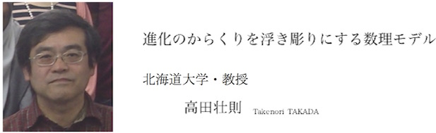

私は、数理生物学という数学と生物の中間領域の研究を行っています。日本の数理生物学の歴史は、１９５０年に東大の小松勇作教授によって著された「数理生物学概論」を発端でした。現在では会員数４００名ほどの日本数理生物学会がさまざまな活動をしています。数理生物学の目的は、数学モデルやシミュレーションモデルを用いて、生物現象の謎を解くことです。私個人は、特に、生態学分野における数理モデルの研究を精力的に行ってきました。数理生態学と呼ばれるこの分野の中で、生物集団の動態・進化と生物群集の動態・進化のからくりを浮き彫りにするために、推移行列モデルや競争系モデル、ゲーム理論などを有用なツールとして用いています。数理生態学研究者の活躍の場は、生態学会、個体群生態学会、種生物学会などの研究者の集まりです。この三十年の間に、生態学の分野では数理モデルの有用性が認められるようになりました。多くの数理生態学者が学会の若手賞を受賞しています。
さらに、最近は生物集団の動態に関するビッグデータの解析を始めています。というのも、２０１４年、１５年と植物、動物の集団動態に関するビッグデータ(COMPADRE, COMADRE)がオンライン化されたからです．このデータベースは過去半世紀に渡る動植物２２００種の野外研究の成果が集約されているもので、各生物種の個体群統計データを総合して、生物種に共通した傾向や特殊な傾向を調べることが可能だと考えられています。今後の研究の発展が楽しみです。